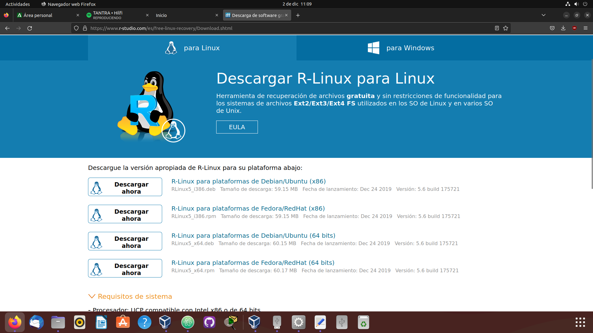

R-Linux (R-Studio)
R-Studio es un conjunto de utilidades de recuperación de datos completamente funcional. Incluye versiones tanto de Windows OS y de Mac OS Linux.
Puede recuperar datos de discos duros (HDD), unidades de estado sólido (SSD), memoria flash, y otros dispositivos de almacenamiento de datos internos y externos
Lo que primero tenemos que hacer es ir a la pagina oficial de R-Studio
Ahora seleccionaremos Pagina de Descarga

Y descargamos la version de 64bits de Ubuntu
Abrimos el archivo .deb con el Asistente de la Tienda de Software de Ubuntu
Y le damos a instalar
Se puede apreciar que ya lo hemos instalado, ahora vamos a iniciarlo
Aceptamos los terminos
Ahora seleccionamos el directorio raiz "/" para seleccionar los tipos de archivos a recuperar
Ahora nos vamos a "Unidad de Disco" y seleccionamos "Recuperar todos los archivos"
Seleccionamos la carpeta Documentos como ejemplo
Seleccionamos los archivos que queremos recuperar
Y esperamos a que termine